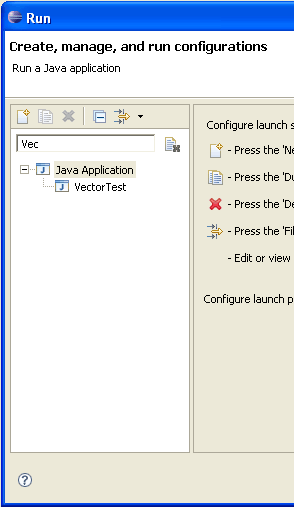

JDT UI
API aware refactorings
There are a number of existing refactorings which have been extended to support API compatibility by keeping the original member as a delegate to the refactored member:
- Rename Method
- Rename Field (for constants only)
- Move Method
- Introduce Parameter
- Change Signature

The generation of a delegate members to preserve API compatibility can be enabled by checking Keep original method as delegate to renamed method in the refactoring wizard.
Deprecation
fix scripts
Deprecated methods can now be annotated with deprecation fix scripts that allow Quick Fix (Ctrl + 1) to be called on a reference to a deprecated method.

Deprecation fix scripts can be created in different ways:
- In "rename method" and the other API aware refactorings, you can choose
to mark the delegate as deprecated.

- On an already deprecated method declaration use Source > Configure Deprecation Fix to configure the deprecation script
- In the editor use Quick Assist (Ctrl + 1) on the declaration of the deprecated method to create a deprecation script fix
In the current milestone, deprecation scripts are always Inline refactorings. The final 3.2 release will offer a 'Replace Invocation' refactoring that lets you specify a code snippet to replace the reference with.
Fix scripts are located in a folder called .deprecations.
This folder can also be included in JAR archives, which allows users of
the JAR to fix their references to the deprecated code.
Extract Superclass refactoring
There is a new refactoring called Extract Superclass which can be used to extract a common superclass from a set of sibling types in the type hierarchy.

In the above example you can invoke the refactoring on 'JavaEditorTests' and when you choose to also include PropertiesEditorTests you get this new hierarchy:

Use Refactor>Extract Superclass... to invoke this refactoring.
Inline refactoring for binary methods

Local refactorings tolerate syntax errors

Clean Up wizard
The code clean up wizard has been extended with the following new options:
- Qualify static and non static method calls
- Unqualify static and non static member accesses
- Use modifier 'final' where possible
- Remove blocks around single 'return' and 'throw' statements
A preview for each option has been added to the clean up wizard.
Select a project, package, or file and start Source > Clean Up to start this wizard.

Category support
Categories are a new Java 6.0 feature. Categories can be defined in Javadoc comments for methods and fields using the @category tag.

Categories are now shown in the Outline view, the Quick Outline, and the Members view in the Java Browsing perspective. Also available is a filter to specify which categories should be shown.

File content decorator
To find out what the first type in a compilation unit or class file is, you can enable Window > Preferences > General > Appearance > Label Decoration > Java Type Indicator:

Find broken NLS keys
An action has been implemented to search for broken NLS Keys. To start the search right click on a properties file, a package, or a whole project and select Source > Find Broken NLS Keys

JDT Text
Javadoc hover explains why there's no Javadoc

Javadoc hovers appear in Browser widget

Improved support for Eclipse's string externalization mechanism

Ctrl+Click on the key to navigate directly to the entry in the corresponding Java properties file and in the Java properties file editor you can also use Ctrl+Click to find out where the key is used in the code.
JDT Core
Improved diagnosis for assignments with no effect
int i = i = 0;i = i = 0;i = ++i;

Fatal errors grouped into single category

Suppressing unnecessary cast warnings
@SuppressWarnings("cast")
can now be used to suppress unnecessary cast warnings.

Running JDT Core features standalone
@Deprecated annotation rendered in Outline
@Deprecated
annotation is now recognized and rendered in the Outline view.

Performance improvements
Before (i.e. 3.2 M5) :

After (i.e. 3.2 M6) :

Recreating modified .class files
Debug
Launch configuration filtering
The launch dialog now provides a name filter. Entries are dynamically filtered to show only those matching the entered text. As well, a Collapse All action has been added to the toolbar.

Variable columns
Variables can be displayed using columns or a standard tree. To toggle columns on/off use the view menu's Layout > Show Columns action. You can select the columns to be displayed using the Layout > Select Columns action. Recently changed variables are displayed with a yellow background (controlled by the "Changed value background color" user preference via the Run/Debug preference page). The Java debugger supports editing of Strings and primitive values inline.

Runtime classpath exported entries
A Java application's default runtime classpath can be configured to only include exported entries from its project's corresponding build path. By default, a runtime classpath includes all entries (exported and non-exported). From the Classpath tab select the default entry and use the Edit button to configure the option.

Suspend thread vs. VM
A preference has been added to the Java > Debug page to control whether newly-created breakpoints suspend a single thread or the entire VM.

PDE
Quick fixes for plug-in manifest files
- unresolved type references
- externalizing attributes and elements
- replacement of deprecated attributes and directives

Automated management of dependencies
The Automated Management of Dependencies section on the Dependencies page of the plug-in manifest editor lets you specify a list of plug-ins that you wish to augment your development build path (and hence your content assist scope) with.
These dependencies do not get added to the MANIFEST.MF immediately, but you can start coding right away as if they were.
At any time, you can tell PDE to analyze your code and generate the correct dependencies in your MANIFEST.MF via either the Require-Bundle or Import-Package headers.

Integrated progress monitor in product splash screen
The Branding page of PDE product editor provides support to add and customize an integrated progress bar.

New processing instruction in plugin.xml files
In the example below, the org.eclipse.pde.core plug-in contributes an extension to the org.eclipse.pde namespace

Note that there is no need to migrate an existing plug-in to use the new processing instruction unless you want to use the new namespace support in that plug-in.
SWT
Custom draw Tree
The Tree widget now supports custom draw for individual cells. Applications can enhance the native look and feel of the tree by custom rendering of the data. The application has control over row height so multiple lines of text can be drawn. In addition, it can present multiple images in the same cell, change font or color multiple times, and change the way selections are drawn.

For examples, see the following snippets:
Custom draw Table
The Table widget now supports custom draw for individual cells. While still maintianing the native look and feel of the table, users can customize how cells are drawn to display data in a form other than text with an image, to show multiple lines of text in one cell, to change font and color multiple times within the same cell, to override the native selection drawing, etc.

For examples, see the following snippets:
Drag over effects for Table and Tree
The Table and Tree widgets now provide visual feedback of what is being dragged.

User Assistance
Embed command
links in User Assistance content

Open cheat sheet from a content file

Support for launching commands from cheat sheets
<?xml version="1.0" encoding="UTF-8"?>
<cheatsheet title="Example of Commands in a Cheat Sheet">
<intro>
<description>A cheat sheet shows the
package explorer</description>
</intro>
<item title="Show Search View">
<description>This is a step with a command
which shows the search view.</description>
<command serialization=
"org.eclipse.search.ui.views.SearchView"/>
</item>
<item title="Step 2">
<description>This is a step with a command and
parameters, shows package explorer.</description>
<command serialization="org.eclipse.ui.views.showView(
org.eclipse.ui.views.showView.viewId=
org.eclipse.jdt.ui.PackageExplorer)"/>
<onCompletion>
Command example completed.
</onCompletion>
</item>
</cheatsheet>Completion message

Composite cheat sheets

Composite cheat sheets have a tree which shows the tasks and their status. The right hand/lower panel contains the individual tasks.

The content of a composite cheat sheets is defined in an XML file. The content file can specify what dependencies exist between tasks so that a task can only be started after any prerequisite tasks have been completed.
Help keyword index
Note: Index content is not yet available for the SDK (the index will only appear if content is available).

XHTML help docs conversion tool
This function can be invoked via PDE Tools > Convert Help files to XHTML from the context menu of plug-in projects.

Universal welcome
A Welcome preference page provided by Universal Welcome opens up Welcome customization to the end users, and can be included in any product that wants to offer it. You can read more about this in the Universal Welcome specification.

Support for configuration and themes in Welcome
Themes represent named collections of CSS files, properties, and images that collectively define the look of the Welcome content. Universal Welcome takes advantage of this support by providing theme selection capability and two concrete themes in 3.2: 'Circles' and 'Purple Mesh'.

New look for welcome

Live news in the Eclipse SDK Welcome

Platform UI
Animated message area for displaying errors and warnings

System Default theme
The System Default theme is a theme that uses fonts and colors available from the operating system rather than those defined by Eclipse.
This theme is the default theme for High Contrast mode. You will be prompted to restart when switching to High Contrast mode and the theme change will be applied then.

CVS
Local and remote history operations combined for CVS projects
For projects mapped to CVS, the local history and CVS history operations in the Compare With and Replace With menus have now been combined into a single History operation.

Date categories in CVS history
The history for a CVS file can now be categorized by date. Icons have also been added to help distinguish local changes from remote revisions.

Proxy support for CVS pserver connections
Proxy support is now available for CVS pserver connections.

CVS Quick Diff annotations
CVS now supports Quick Diff annotations for local files. Perform a Team > Show Annotations on a local file and you will see color-based annotations of who did what in the file. The bar on the left hand side shows a different color for each user. Hovering over a section shows the details of that revision and highlights the sections of code contributed by that revision in the right hand bar.

Ant
Namespace support for the Ant extension points
The Ant Core antTasks and antTypes extension points now allow for the designation of a URI that the definition should live in. See bug 133190 for full details of all the changes.
Java problem markers from a "javac" build
Running an Ant build that contains a "javac" declaration can produce JDT problem markers for the code that is compiled. The marker generation is controlled by an Ant UI preference: Window > Preferences > Ant > Create problem markers from "javac" results. As well, the "javac" declaration needs to set the "listfiles" attribute to "true" and an Eclipse console must be allocated for the build output.